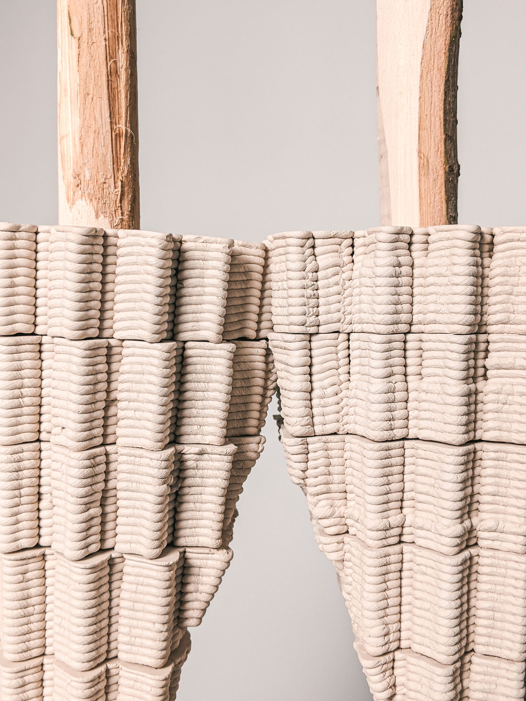

Spatial Experiments | Master's Studio | Lund University, Sweden
The studio was conducted under the ambit of exploring parametricism in Nature, with a keen focus in additive spatial and formal experiments for digital fabrication. For our project we chose to begin with the dissection and further understanding of the repair architecture of the Parishnogaster. Mellyi Wasp.
In a nutshell, this species of wasp uses and reuses organic leafy material by taking apart cells in its nest when they are not in use, to repair or build new cells. Following our study trip to the Moroccan sub-Sahara, we were further inspired by the vernacular practice of adobe clay construction in building their local kasbahs.
In a nutshell, this species of wasp uses and reuses organic leafy material by taking apart cells in its nest when they are not in use, to repair or build new cells. Following our study trip to the Moroccan sub-Sahara, we were further inspired by the vernacular practice of adobe clay construction in building their local kasbahs.
The process is almost completely organic, 100% repairable using materials sourced locally. Merging the best of these two different construction logics together, we decided to investigate interlocking architecture in greater depth utilizing clay as our preferred medium for digital fabrication.
In Tamnougalt, Morocco, residential tourism allows foreigners to experience and learn about living in an extreme, hot and arid climate. Expanding upon the results of our experiments, this project re-imagines a traditional clay-timber Kasbah, built for and by travellers. This digitally fabricated building presents a small prototype of architecture within a waste-reducing, circular building economy. Architecture that can be constructed , repaired and eventually allowed to return to the earth it came from.
In Tamnougalt, Morocco, residential tourism allows foreigners to experience and learn about living in an extreme, hot and arid climate. Expanding upon the results of our experiments, this project re-imagines a traditional clay-timber Kasbah, built for and by travellers. This digitally fabricated building presents a small prototype of architecture within a waste-reducing, circular building economy. Architecture that can be constructed , repaired and eventually allowed to return to the earth it came from.


